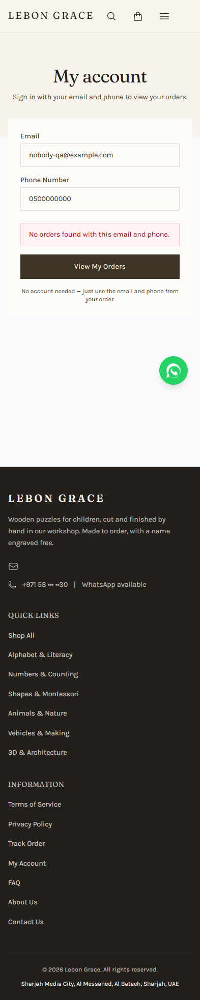

MEDIUM · RC-01 — Production E2E fails across all device projects
Current run: 6 passed / 3 failed. The identical-refusal test waits for networkidle, times out, then the page is closed before input. Use hydration/interactive locators instead.
Accountless lookup persona. No customer order, address, credential, email or existing browser tab touched.
Unknown lookup safely reveals nothing in desktop/mobile Edge. Current production E2E loses three enumeration tests to a network-idle timeout; successful lookup persists credential material in local storage.
No tier, password, server session, locale variants or saved-account feature exists. Account uses email + checkout phone and returns matching order history. Unknown credentials gave one ambiguous refusal, no overflow and no leaked order data.
Current run: 6 passed / 3 failed. The identical-refusal test waits for networkidle, times out, then the page is closed before input. Use hydration/interactive locators instead.
Email + phone are written as plaintext lebon-grace-account. Sign Out resets UI state only. Do not retain lookup credentials, or explicitly remember with expiry and clearing.
Refunded/failed/legacy paid statuses fall back to payment-pending yellow instead of tracker terminal presentation. Reuse exhaustive status mapping.

Evidence script/JSON/screenshots are retained in this folder. Next: Reviewer.